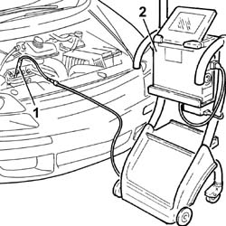

0510A10 CYLINDER COMPRESSION - CHECK FOR LOOSE SPARK PLUGS OR INJECTORS
- Path
- Procedures > 05 DIAGNOSTICS > 0510 VARIOUS CONTROLS > 0510A CHECKS ON ENGINE > 0510A10 CYLINDER COMPRESSION - CHECK FOR LOOSE SPARK PLUGS OR INJECTORS
- Kind
- repair procedure (removal / refitting; the operation number is the code)
- Applies to
- engines: 2.0 16V JTD, 2.2 16V JTD; all production periods
- Interactive page
- https://sloeber94.github.io/elrnDB-fUlss/en/#/179006832
Applies to: engines: 2.0 16V JTD, 2.2 16V JTD; all production periods
- Disconnect the electrical connections from the engine management control unit.
1. Fit dummy injector 1870822000 in the injector seat and secure it using the brackets.
2. Fit the diagnostic equipment pressure transducer on the dummy injector (connector 1870793001 for the Examiner, connector 870811001 for the Motometer)
- Turn the engine over several times, using the starter motor, keeping the clutch pedal pressed.

Applies to: engines: 2.0 16V JTD, 2.2 16V JTD; all production periods
- Repeat the test for the remaining cylinders.
- Check that the pressure values measured in the individual cylinders does not differ by more than 5 bar and is between 25 and 30 bar.
- Connect the electrical connections to the engine management control unit.